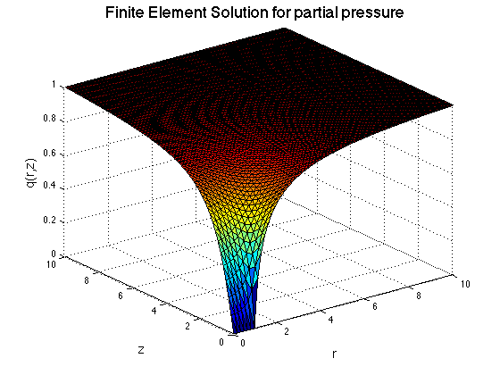

This program solves the limiting case of the model equation (Simpler Problem).
Finite Element method is coded in Cylindrical polar coordinates
to solve for partial pressure of oxygen.
Wakil Sarfaraz. 22 May 2014
clear all;
tic
xmax = 10;
N = 64;
X = linspace(0,xmax,N+1);
[x, y] = meshgrid(X,X);
x =x(:);
y =y(:);
NNODES = (N+1)^2;
NTRI = 2*N^2;
LNODES = zeros(NTRI, 3);
for i = 1:N
for j = 1: N
LNODES(i+2*(j-1)*N,1) = i+(j-1)*(N+1);
LNODES(i+2*(j-1)*N,2) = i+j*(N+1);
LNODES(i+2*(j-1)*N,3) = (i+1)+(j-1)*(N+1);
LNODES(i+N+2*(j-1)*N,1) = i+1+j*(N+1);
LNODES(i+N+2*(j-1)*N,2) = (i+1)+(j-1)*(N+1);
LNODES(i+N+2*(j-1)*N,3) = i+j*(N+1);
end
end
SP = sparse(NNODES, NNODES);
LV = zeros(NNODES,1);
for n = 1: NTRI
r1 = [x(LNODES(n,1)) y(LNODES(n,1))];
r2 = [x(LNODES(n,2)) y(LNODES(n,2))];
r3 = [x(LNODES(n,3)) y(LNODES(n,3))];
J = [r2(1)-r1(1) r2(2)-r1(2); r3(1)-r1(1) r3(2)-r1(2)];
detJ(n) = det(J);
Astiff = ((r2(1)+r3(1))/(2*det(J)))*...
[(r2(2)-r3(2))^2+(r3(1)-r2(1))^2 ...
(r2(2)-r3(2))*(r3(2)-r1(2))+(r3(1)-r2(1))*(r1(1)-r3(1))...
(r2(2)-r3(2))*(r1(2)-r2(2))+(r3(1)-r2(1))*(r2(1)-r1(1)); ...
(r3(2)-r1(2))*(r2(2)-r3(2))+(r1(1)-r3(1))*(r3(1)-r2(1)) ...
(r3(2)-r1(2))^2+(r1(1)-r3(1))^2 ...
(r3(2)-r1(2))*(r1(2)-r2(2))+(r1(1)-r3(1))*(r2(1)-r1(1)); ...
(r2(2)-r3(2))*(r1(2)-r2(2))+(r3(1)-r2(1))*(r2(1)-r1(1)) ...
(r3(2)-r1(2))*(r1(2)-r2(2))+(r1(1)-r3(1))*(r2(1)-r1(1)) ...
(r1(2)-r2(2))^2+(r2(1)-r1(1))^2];
for i = 1 : 3
for j = 1:3
SP(LNODES(n,i),LNODES(n,j)) =SP(LNODES(n,i),LNODES(n,j))...
+ Astiff(i,j);
end
end
end
for i = 1: NNODES
if (x(i)==xmax || y(i)==xmax)
LV(i) = 1;
SP(i,:) = 0;
SP(i,i) =1 ;
elseif (y(i) == 0 && x(i) >= 0 && x(i) <= 1)
SP(i,:) = 0;
SP(i,i) = 1;
LV(i) = 0;
end
end
U = SP\LV;
trisurf(LNODES,x,y,U)
xlabel('r','fontsize',14)
xlim([0 xmax])
ylim([0 xmax])
ylabel('z','fontsize',14)
zlabel('q(r,z)','fontsize',14)
title('Finite Element Solution for partial pressure','fontsize',18)
DU = zeros((N+1)^2,1);
I =0;
for i = 1: (N+1)^2
if y(i)==0 && x(i)<1
DU(i) = (U(i+1)-U(i))/(y(i+1)-y(i));
I = I+2*x(i)*DU(i);
elseif y(i)==0 && x(i)==1
DU(i) = (U(i+1)-U(i))/(y(i+1)-y(i));
I = I+DU(i);
end
end
I = (xmax/(N+1))*pi/4*I;
Dh = zeros(NTRI,1);
Ih = 0;
for i = 1: NTRI
Dh(i) = ([x(LNODES(i,1))-x(LNODES(i,3)) y(LNODES(i,1))-y(LNODES(i,3))]*...
[x(LNODES(i,1))-x(LNODES(i,3)) y(LNODES(i,1))-y(LNODES(i,3))]'...
*(U(LNODES(i,2))-U(LNODES(i,1)))*(U(LNODES(i,1))-U(LNODES(i,2)))...
+[x(LNODES(i,1))-x(LNODES(i,2)) y(LNODES(i,1))-y(LNODES(i,2))]*...
[x(LNODES(i,1))-x(LNODES(i,2)) y(LNODES(i,1))-y(LNODES(i,2))]'...
*(U(LNODES(i,3))-U(LNODES(i,1)))*(U(LNODES(i,1))-U(LNODES(i,3)))...
+[x(LNODES(i,2))-x(LNODES(i,1)) y(LNODES(i,2))-y(LNODES(i,1))]*...
[x(LNODES(i,1))-x(LNODES(i,3)) y(LNODES(i,1))-y(LNODES(i,3))]'...
*((U(LNODES(i,3))-U(LNODES(i,1)))*(U(LNODES(i,1))-U(LNODES(i,2)))...
+(U(LNODES(i,2))-U(LNODES(i,1)))*(U(LNODES(i,1))-U(LNODES(i,3)))))...
*(1/6)*(x(LNODES(i,1))+x(LNODES(i,2))+x(LNODES(i,3)));
r1 = [x(LNODES(i,1)) y(LNODES(i,1))];
r2 = [x(LNODES(i,2)) y(LNODES(i,2))];
r3 = [x(LNODES(i,3)) y(LNODES(i,3))];
J = [r2(1)-r1(1) r2(2)-r1(2); r3(1)-r1(1) r3(2)-r1(2)];
Ih = Ih+Dh(i)/det(J);
end
Ih = (-pi/2)*Ih;
Differ = abs(I-Ih);
TI = abs(1-I);
TIh = abs(1-Ih);
toc
Elapsed time is 2.200363 seconds.
